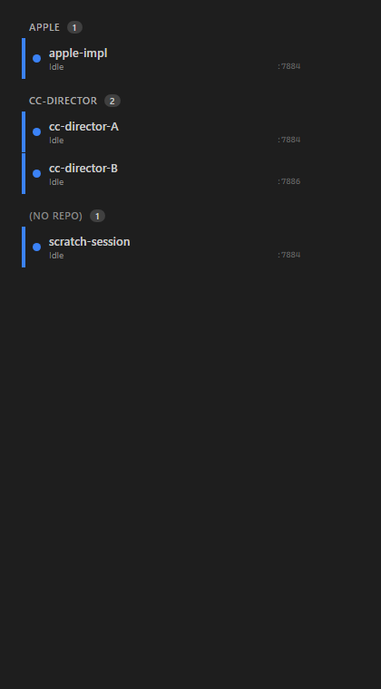
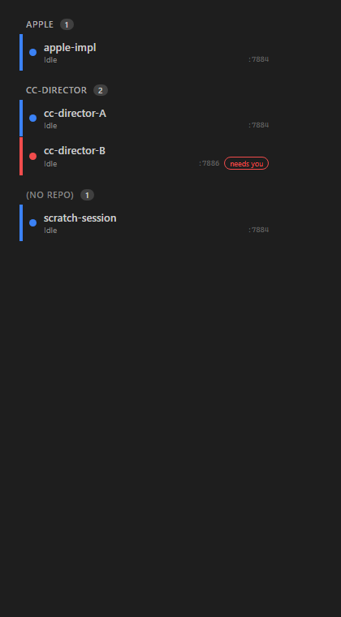

The QA Agent did NOT reuse the Developer Agent's binary or screenshots. A fresh detached worktree was
checked out at the PR tip (78905ee). Unit tests were run from that checkout; the
rail-view visual proof was produced by re-running the test project's proof emitter
(EmitProofArtifact) which renders the REAL compiled SessionRail component
wrapped in the real app.css, then screenshotting that genuine compiled markup. The
independently-generated render bytes were diffed against the committed artifact and matched (only
line-ending differences). The full solution was built clean.
| # | Criterion | Expected | Actual | Evidence | Result |
|---|---|---|---|---|---|
| 1 | "Repo" toggle button right of Tree/Triage, vt-on when active |
Third button labeled "Repo" with active class | Button at Cockpit.razor:71-73, class binds vt-on when _viewMode=="repo" |
code review | PASS |
| 2 | Clicking "Repo" sets _viewMode="repo" and renders repo layout |
SessionRail renders repo-grouped layout | else if (ViewMode == "repo") branch in SessionRail.razor:194 emits repo groups; bUnit render confirmed |
code + bUnit | PASS |
| 3 | One header per distinct repo, alphabetical case-insensitive | Headers sorted A->Z ignoring case | Screenshot: APPLE before CC-DIRECTOR. Unit test InRepoGroups_HeadersAreAlphabetical_CaseInsensitive passes (Apple/banana/zebra) |
qa-repo-view.png + unit test + bUnit | PASS |
| 4 | In-group desktop order; row does not move when only status color changes | cc-director-B stays below cc-director-A after turning red | Blue vs flipped screenshots: cc-director-B turns red ("needs you") but remains in its SortOrder slot below cc-director-A. Unit + bUnit RepoView_RowOrder_IsDesktopOrder_NotAffectedByColor |
qa-repo-view.png vs qa-repo-view-color-changed.png | PASS |
| 5 | Every row shows owning Director short-id (sess-dir visible, as triage) | Per-row Director label shown | Screenshot shows :7884 / :7886 per row. CSS .rail.repo .sess-dir{margin-left:auto} (shown, not display:none as tree). bUnit asserts :7886 + title |
qa-repo-view.png + app.css:341 + bUnit | PASS |
| 6 | Same repo on two machines/Directors under ONE header | cc-director-A (MACHINE_A/:7884) and cc-director-B (MACHINE_B/:7886) under one "CC-DIRECTOR" header | Screenshot: single CC-DIRECTOR header, count 2, both rows. Unit test InRepoGroups_SameRepoAcrossMachines_CoalescesIntoOneGroup + bUnit RepoView_SameRepoAcrossMachines_UnderOneHeader |
qa-repo-view.png + unit + bUnit | PASS |
| 7 | Repo-less sessions under single "(no repo)" group, after named repos | "(no repo)" group rendered last | Screenshot: "(NO REPO)" group last with scratch-session. Unit test InRepoGroups_NoRepoGroup_IsPlacedLast + bUnit |
qa-repo-view.png + unit + bUnit | PASS |
| 8 | Public static SessionOrdering.InRepoGroups + new tests (alpha order, no-repo last, in-group desktop order, cross-machine coalescing) |
dotnet test passes the new tests |
public static IReadOnlyList<RepoGroup> InRepoGroups(...) in SessionOrdering.cs. Gateway.Tests SessionOrderingTests: 25/25 pass (8 repo tests). Cockpit.Tests rail-render: 6/6 pass |
test output below | PASS |
| 9 | Repo view persists across reload (cockpit.viewMode round-trips "repo") |
Init guard + SetViewMode guard accept "repo"; saved to localStorage | Init restore guard Cockpit.razor:1161 mode is "tree" or "triage" or "repo"; SetViewMode guard 2045 accepts "repo" and calls SavePref("cockpit.viewMode", mode) |
code review | PASS |
| 10 | dotnet build cc-director.sln succeeds, no new warnings |
Build succeeded, 0 warnings | Build succeeded. 0 Warning(s), 0 Error(s) | build output below | PASS |
Rendered from the genuine compiled SessionRail + real app.css. Alphabetical headers (APPLE, CC-DIRECTOR), cross-machine coalescing (cc-director-A :7884 / cc-director-B :7886 under one header), per-row Director short-id, and "(NO REPO)" group last.

Same roster, cc-director-B forced red ("needs you"). Its row position is unchanged - it stays below cc-director-A (lower SortOrder). Desktop order is the only positional signal.

Gateway.Tests / SessionOrderingTests: Passed! Failed: 0, Passed: 25, Skipped: 0, Total: 25 Cockpit.Tests / SessionRailRepoViewTests: Passed! Failed: 0, Passed: 6, Skipped: 0, Total: 6
dotnet build cc-director.sln
Build succeeded.
0 Warning(s)
0 Error(s)
repo branch added.SessionOrdering (Gateway.Contracts), not inline LINQ - honors the #196 convention.SessionRow template; no duplicated row markup.